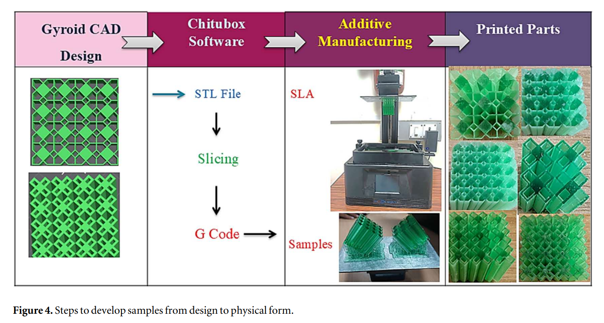

Design and Optimization of Nature-Inspired Polygon Lattice Structures
Research Publication
Advances in Mechanical Engineering | SAGE Journal

Project Overview
The demand for lightweight yet highly durable materials is a critical challenge in modern engineering and manufacturing. Drawing inspiration from natural geometries, this research explored the mechanical viability of bio-inspired polygonal lattice designs. The primary objective was to systematically evaluate and optimize these structures to maximize their mechanical performance and energy absorption for advanced lightweight engineering applications.
Technical Implementation
To rigorously evaluate the structural integrity and performance of various polygonal geometries, I developed a comprehensive computational simulation pipeline:
- Parametric Geometric Modeling: Designed complex, nature-inspired lattice structures—specifically focusing on triangular, square, and pentagonal configurations—varying key parameters such as unit cell size, wall thickness, and porosity levels.
- Finite Element Analysis (FEA): Applied advanced FEA techniques to simulate quasi-static compressive behavior. This allowed for the precise mathematical evaluation of stress-strain responses, energy absorption characteristics, and deformation patterns under high-load conditions.
- Experimental Validation: Correlated the simulated computational data with physical experimental compression tests to validate the accuracy and reliability of the FEA stress-strain models.
System Output & Impact
The systematic evaluation yielded highly definitive optimization parameters for additive manufacturing. The research identified that a 50% porosity pentagon lattice serves as the optimal structural configuration. This specific geometry demonstrated a peak compressive strength of 40.1 MPa, achieving a remarkable strength-to-weight ratio that is 62% higher than square lattices and 170% higher than triangular lattices. This work provides a validated, data-backed foundation for deploying pentagonal lattices in high-performance structural components.